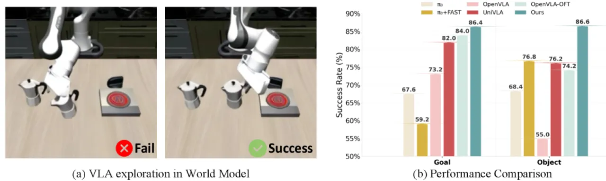
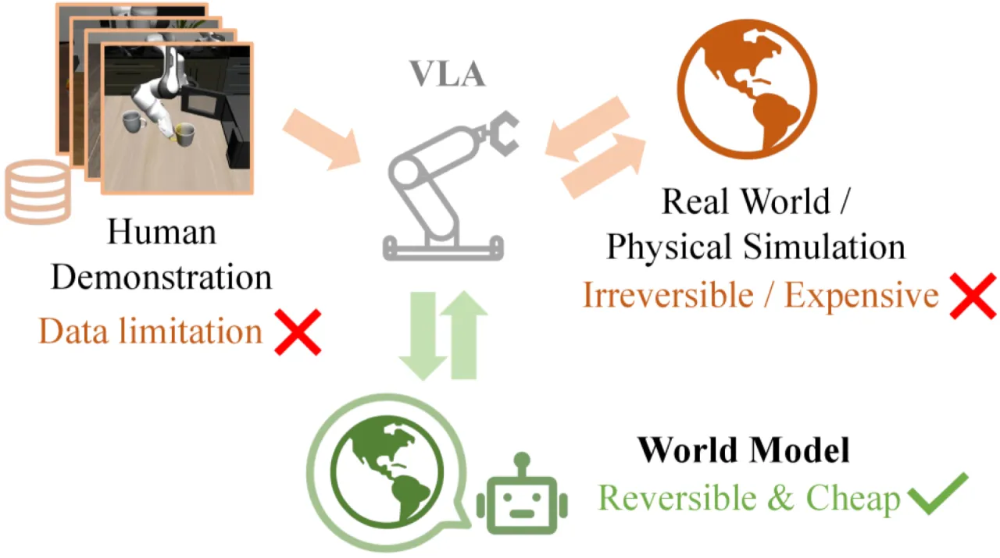
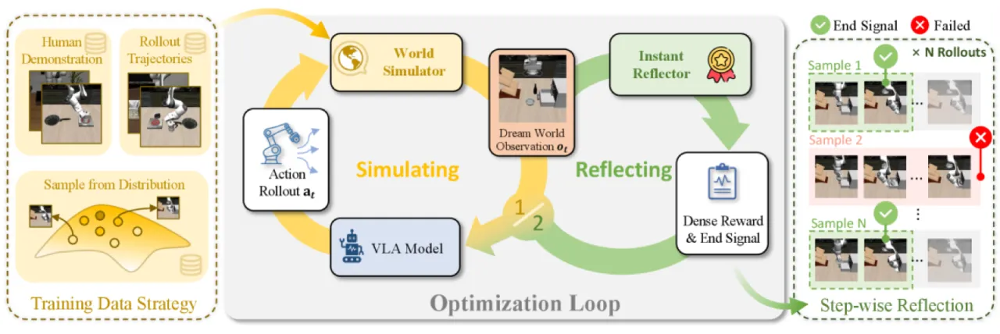
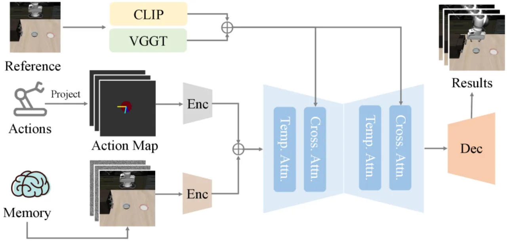
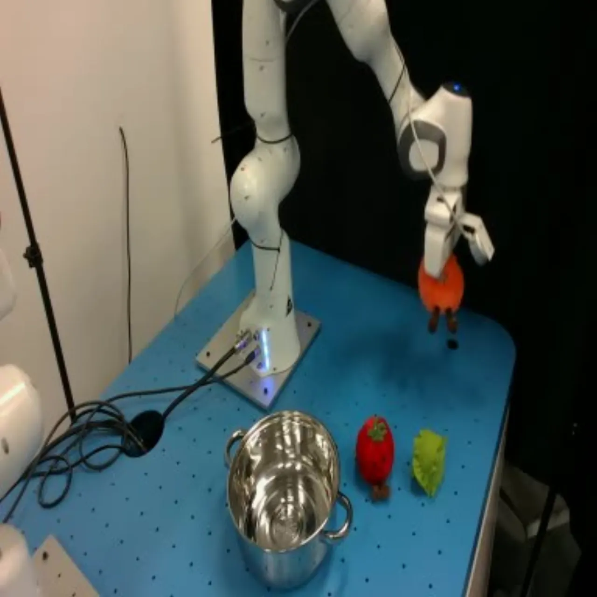

VLA（Vision-Language-Action）模型依赖大规模示例学习，在数据稀缺场景下性能严重下降。 World-Env 提出以扩散式世界模型替代物理机器人环境，配合 VLM 奖励模块和 Leave-One-Out PPO， 仅需每任务 5 条专家示例即可在 LIBERO 基准上取得显著的策略性能提升，同时规避了真实机器人交互的安全风险与高成本。
VLA 模型通过模仿学习训练，在数据充足时表现优异，但在示例稀缺时性能大幅退化。 虽然强化学习（RL）后训练可缓解数据稀缺问题，但直接在真实机器人上应用 RL 面临两大核心障碍： 真实环境的不可重置性，以及在工业自动化等高风险领域中的安全与成本约束。 此外，现有 VLA 方法缺乏可靠的任务完成检测机制，导致"冗余动作降低整体任务成功率"。
"video-based world model offers a promising solution" — 通过对动作结果进行安全、低成本的仿真， 实现策略的探索与优化，无需与物理环境交互。


World-Env 框架由三个核心模块构成：物理一致性世界模拟器（生成视觉预测）、 VLM 引导的 Instant Reflector（提供连续奖励与终止信号）， 以及基于 Leave-One-Out PPO 的后训练优化循环。 三者协同，使 VLA 模型能够在世界模型环境中安全探索并超越初始训练分布。

世界模拟器采用扩散模型架构，根据当前观测和动作序列生成时序一致的未来视觉帧。 关键创新在于"geometry-aware feature injection strategy"： 通过 cross-attention 将 VGGT 提取的几何结构特征和 CLIP 提取的语义特征注入 U-Net 去噪层， 使生成帧在物理上保持连贯。 为增强数据多样性，将已 SFT 的 OpenVLA-OFT 策略部署在模拟器中自主探索， 收集成功轨迹和失败轨迹；同时通过 Laplace 分布的 scale head 增强动作多样性。

Instant Reflector 是一个 VLM 模块，为每一帧预测 [0, 1] 范围内的任务完成概率作为连续奖励信号。 架构采用冻结视觉编码器和 LLM，配合可训练的奖励头，使用二元交叉熵损失在专家和策略生成的轨迹上进行训练。 连续奖励解决了"prior VLA post-training approaches rely on binary rewards (e.g., 1 for success, 0 for failure), which lead to degenerate advantage estimates when rollout trajectories are homogeneous"的问题， 确保 advantage 估计始终非平凡，无需人工平衡成功与失败轨迹的比例。 当 Reflector 分数超过阈值 η=0.5 或达到最大时间步时，轨迹终止。
后训练阶段结合 RLOO（Leave-One-Out）advantage 估计与 PPO 策略更新， 对 VLA 模型进行端到端强化学习优化。 世界模拟器生成的多样化轨迹（含成功与失败样本）作为 rollout 数据， Instant Reflector 实时提供奖励，驱动策略持续改进并安全探索训练分布之外的状态空间。
在 LIBERO 基准的四个任务套件（Spatial、Object、Goal、Long）上评估， 每个任务仅使用训练集中的 5 条示例，在完整测试集上评测。 基线包括 π0、UniVLA、OpenVLA-OFT 及同期 RIPT-VLA 等。
| 方法 | Goal | Object | Spatial | Long | 平均 |
|---|---|---|---|---|---|
| π0 | 55.8 | 65.8 | 62.6 | 60.2 | 61.1 |
| UniVLA | 79.4 | 75.2 | 73.4 | 71.0 | 74.75 |
| OpenVLA-OFT（基线） | 84.0 | 74.2 | 84.2 | 57.0 | 74.85 |
| World-Env（本文） | 86.4 | 86.6 | 87.6 | 57.8 | 79.6 |
| 任务 | OpenVLA-OFT | World-Env | 提升 |
|---|---|---|---|
| clean table（清理桌面） | 20% | 30% | +10% |
| put green toy（放绿色玩具） | 30% | 50% | +20% |
| put red toy（放红色玩具） | 30% | 40% | +10% |
| put orange toy（放橙色玩具） | 20% | 50% | +30% |

消融分析揭示各模块的贡献：额外训练数据（世界模拟器自主探索轨迹）贡献 +11.4% 平均提升； 奖励头（Instant Reflector）贡献 +10.8% 平均提升。 终止信号分析（Table 4）表明，强制策略执行完整时序而不提前停止会导致性能退化至 54.9–65.4%， 而 World-Env 通过 Instant Reflector 检测任务完成时机，实现 74.9% 的成功率。
论文指出："Both the world simulator and the instant reflector rely on diverse training data to achieve high-fidelity simulation and accurate task evaluation." 当前框架仍依赖针对特定任务域收集的数据来训练模拟器和奖励模型； 作者预期"future advances in general-purpose world models will alleviate this dependency"。
论文承认："Policy optimization in our framework is currently slower than in concurrent methods due to computational bottlenecks in simulator-based trajectory generation." 基于世界模拟器的轨迹生成速度慢于直接在仿真器（如 IsaacGym）中运行策略的方法， 作者将其列为"a key focus of our future work"。
（从设计推断）论文将 World-Env 与基于物理仿真器的 RL 方法（如 RIPT-VLA）并列比较， 指出两者在 LIBERO 上性能相当，但 World-Env 的优势在于"readily deployable in real-world settings"—— 即当任务缺乏对应物理仿真器时仍可使用。 然而，当物理仿真器可用时，World-Env 的模拟保真度与速度仍不及直接仿真方案。